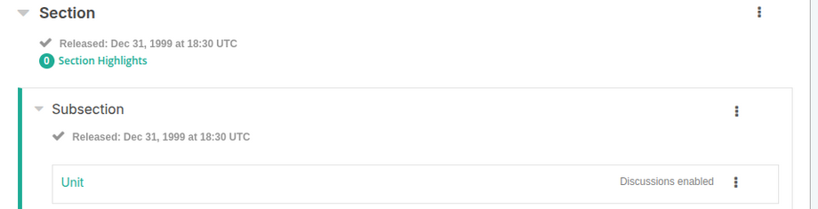
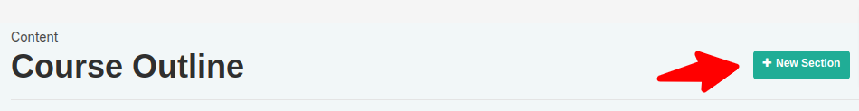
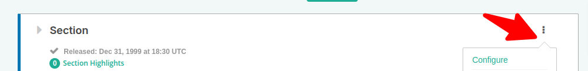
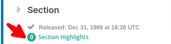
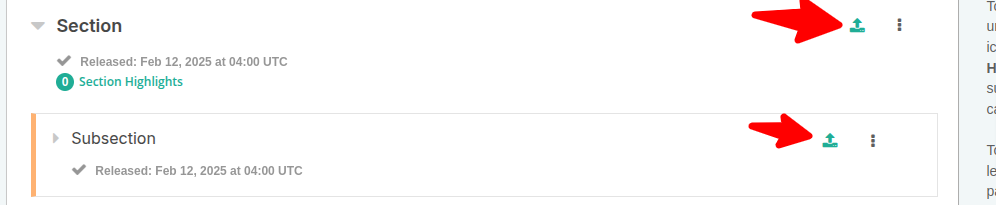
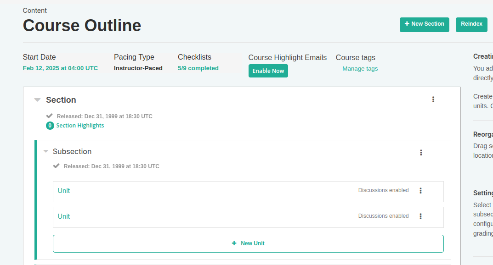

What Is a Section?
A section is the topmost category in your course. It can represent a time period, chapter, or another organizing principle. A section contains one or more subsections. The levels are:
- Sections
- Subsections
- Units

Course Progress Information
The course outline shows the learner’s progress. A green check mark indicates that all actions for the section, subsection, or unit have been completed, such as: - Viewing all videos - Submitting answers for all problems - Viewing HTML content for at least 5 seconds
When learners select "Resume Course," the course opens to the unit they most recently completed.
Sections and Visibility to Learners
Learners cannot see content in a section if its release date is unscheduled or has not passed. If the release date has passed, learners can see the content if: - The release date for the subsection is passed - The unit is published and not hidden
Release Statuses of Sections
Course authors control the release status of sections. For the content to be visible to learners, the section must be released. Possible release statuses are:
- Unscheduled: Content is not visible until scheduled.
- Scheduled: The section becomes visible after the scheduled release date.
- Released: Content is visible if subsections and units are also released.
- Released with Unpublished Changes: Learners see the last published version of a unit until changes are published.
- Staff Only Content: Hidden from learners, available to the course team only.
Create a Section
To create a section: - On the Course Outline page, select "New Section." - A new section appears at the end of the course outline. - Enter a descriptive name for the section and add subsections as needed.

It is recommended to test the course content as you create new sections.
Change a Section Name
To edit a section name: - Hover over the section name to show the Edit icon. - Select the icon, edit the name, and save it.
Set a Section Release Date
To set a section release date: - Select the "Configure" icon in the section box. - Set the date and time (in UTC) for the section to be released. - Save your changes.

Set Section Highlights for Highlight Emails
If enabled by the system administrator, highlights of course content can be sent to learners via email. To set highlights:
- Go to the Course Outline page.
- Under the section name, select "Section Highlights."
- Enter 3-5 highlights for the section, each with a maximum of 250 characters.
- Save your changes.
Send Highlight Emails
Once highlights are set, enable highlight emails:
- On the Course Outline page, find the "Course Highlight Emails" setting.
-
Select "Enable Now" and confirm.
-
Note: Highlight emails cannot be disabled after enabling.

Publish All Units in a Section
To publish all new and changed units in a section, click the "Publish" icon in the section box. The icon appears only if there’s new or modified content.

Hide a Section from Learners
To hide a section from learners: - Select the "Configure" icon in the section box. - In the settings, choose "Hide from learners." - Save the changes.
To make it visible again, repeat these steps and deselect "Hide from learners."
For more detailed information, you can explore other sections of the course documentation.
